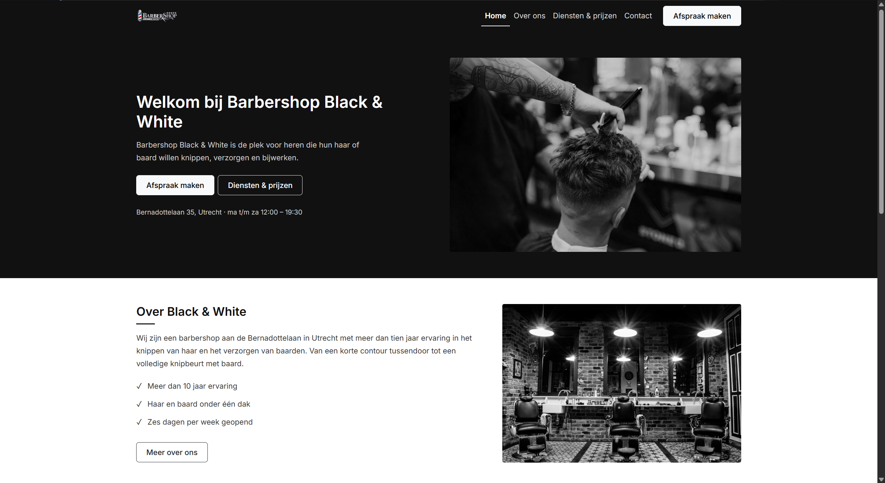

Demo project
Kapperszaak demo
Een demo website die ik heb gemaakt voor een kapperszaak, met onder andere een overzicht van de behandelingen en een contactmogelijkheid.
Bekijk projectSoftware Developer student — MBO Utrecht
Software Developer student
Ik ben Mehmet Can, tweedejaars Software Developer student aan MBO Utrecht. Op deze website laat ik zien wie ik ben en aan welke projecten ik tijdens mijn opleiding en daarbuiten heb gewerkt.
Over mij
Ik leer het beste door dingen zelf te maken. Wanneer ik iets nieuws tegenkom, probeer ik eerst te begrijpen hoe het werkt en daarna zelf ermee aan de slag te gaan. Als iets niet lukt, zoek ik uit waar het probleem zit en probeer ik het stap voor stap op te lossen.
De laatste tijd ben ik vooral bezig met websites. Ik vind het leuk om een idee om te zetten in een echte pagina die er goed uitziet en ook goed werkt. Ik werk veel met HTML, CSS en Bootstrap en probeer steeds beter te worden in het maken van responsive websites.
Naast school vind ik het leuk om zelf projecten te bedenken en te bouwen. Hierdoor kan ik nieuwe dingen uitproberen en tegelijk oefenen met wat ik op school leer. Niet elk project wordt perfect, maar juist door dingen zelf te maken leer ik het meeste.
Ik ben nog bezig met ontdekken welke richting binnen software development het beste bij mij past. Tijdens mijn stage wil ik vooral ervaring opdoen, nieuwe dingen leren en meemaken hoe het is om aan echte projecten te werken. Deze portfolio is een kleine verzameling van wat ik tot nu toe heb gemaakt.
Dit zijn vaardigheden waar ik momenteel mee werk en waar ik mij nog steeds in aan het ontwikkelen ben.
Projecten
Een overzicht van projecten die ik bouw tijdens en naast mijn opleiding. Niet alles staat online, dus dit overzicht groeit nog.

Een demo website die ik heb gemaakt voor een kapperszaak, met onder andere een overzicht van de behandelingen en een contactmogelijkheid.
Bekijk project